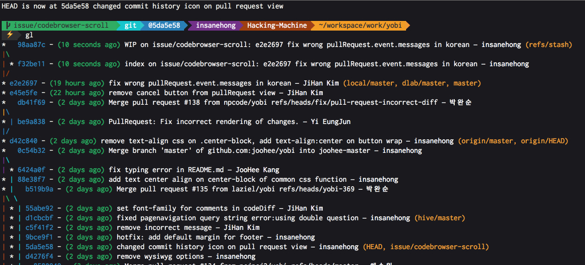
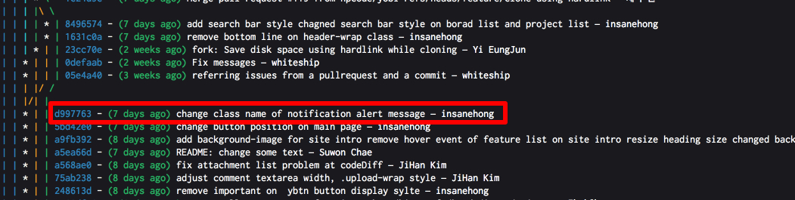
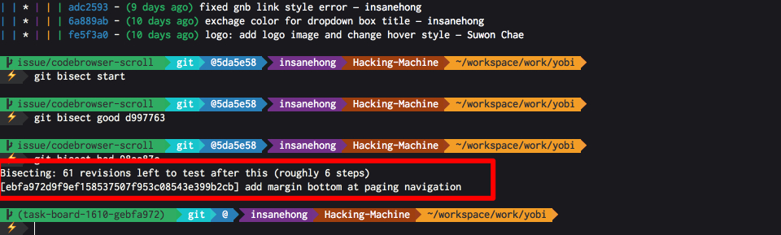
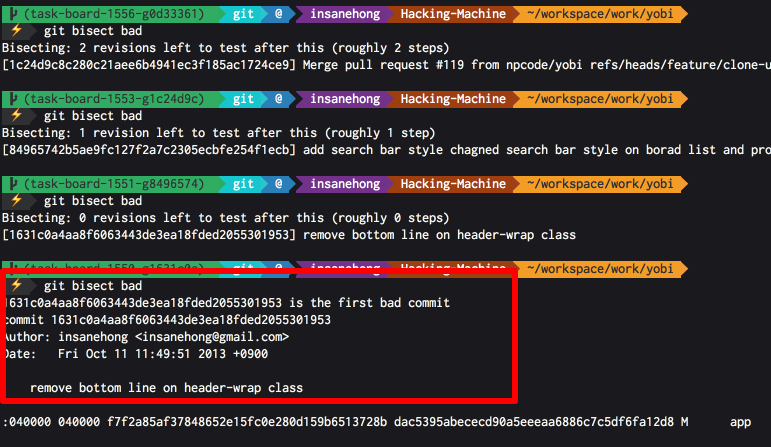

About Author

Insanehong
blog: http://insanehong.kr
twitter: @insanehong
github: insanehong.github.com
- NAVER Corporation, Front-End Engineer(2013~)
- Like Javascript, Dart, HTML5, CSS3,Responsive Web, Haroopress, Frends, Lean Startup, Open Source
- Hackrslab co-founder
- About me http://about.me/insanehong
About this Article
Date Released:
Friday, October 18 2013 9:01 AMgit으로 디버깅하기
git 으로 Debuging 하기
보통 프로젝트를 진행하다가 버그를 발견하고 이 부분이 언제 어떤 커밋으로 인하여 발생하였는지 알고 싶은 경우가 있다.
어떤 코드로 인하여 발생한 문제인지를 정확히 집어야 해당 문제를 해결하는데 수월할 뿐만아니라 변경된 시점을 알게되면 언제부터 문제가 발생하였는지 정확히 트레킹 할수 있기 때문이다.
하지만 프로젝트의 모든 커밋 히스토리를 하나하나 뒤져가며 복구하고 실행해보고 재현이 되는가를 테스트하는 것은 거의 불가능한 일이다.
하지만 git 을 이용하면 약 5분도 안되는 시간이내에 어떤 커밋으로 인하여 문제가 되었는지 쉽게 찾을 수 있다.
git bisect
사실 나도 이 명령어를 얼핏 본 경험은 있지만 실제 업무에서 사용해본적은 없었다. 하지만 ui 쪽에서 생긴 문제를 debuging 하는 과정에서 엄청난 노가다를 (reset 을 사용하여 테스트 중이였다.) 하던중, 이를 지켜보던 @semtlnori님이 도움의 손길로 알려준 녀석이 바로 git bisect 이다.
역시 주위에 git hard core user 가 있다는 것은 좋은 일이다.
이 녀석을 사용하면 git 이 알아서 문제가 되는 녀석을 찾아주고 해당 커밋에서 diff를 통하여 어떤 코드가 수정되어서 생긴 문제인지 정확하게 알수 있다.
git bisect 의 은혜를 받아보자
git bisect 를 이용하기 위해서는 우선적으로 해야 할 일이 있다. 바로 문제가 발생하고 있는 커밋과 해당 문제가 발생하지 않는 커밋을 찾는 것이다.
하지만 이는 정확히 언제부터인가 라는 정확도를 요구하지 않는다. 다만 커밋로그를 뒤져 어느 순간이던 문제가 발생하고 있는 커밋과 해당 문제가 발생하지 않는 커밋을 두개 뽑아내면 되는 것이다.
문제가 발생하는 커밋 찾기
가장 먼저 해야 할 일은 문제가 되는 시점을 찾기 위해 버그가 발생하고 있는 커밋을 하나 선택하여야 한다.
정확히 어느시점에서 버그가 발생했는지는 모르는 상태이기 때문에 아무 커밋이나 해당 버그가 재현되는 곳이 있다면 선택하면 된다.

위와 같은 커밋트리가 존재할때 현재 문제가 발생하고 있다고 가정한다면 별 고민 없이 현재 문제가 발생하고 있으므로 가장 최근 커밋을 선택한다.
현재 가장 최근 커밋이 98aa87c 이므로 문제가 발생하는 커밋으로 결정!
문제가 발생하지 않는 커밋 찾기
이 커밋 또한 정확한 시점을 찾으려고 할 필요 없다. 다만 정말 아무시점에서의 커밋이나 해당 문제가 발생하지 않는 커밋을 찾았다면 그녀석을 찾으면 된다.

위에 표시된 커밋에서는 해당 문제가 발생하지 않는다는 것이 확인 되어 일단 문제가 되지 않는 커밋으로 d997763 를 선택.
git bisect 사용하기
자 이제 문제가 발생하고 있는 커밋과 발생하지 않는 커밋을 찾았으니 git에게 어떤 커밋으로 인하여 문제가 발생했는지 물어볼 차례. 사용방 법은 간단하다.
$ git bisect start
$ git bisect good d997763 //문제가 발생하지 않는 커밋
$ git bisect bad 98aa87c //문제가 발생하는 커밋
위와 같이 문제가 발생하는 시점과 발생하지 않는 시점을 git 에게 알려주면 그다음 부터는 git이 알아서 해당 문제를 찾아가기 위한 스텝을 밟아 나간다.

위 실행 화면에서 보면 알수 있듯히 git 이 스스로 특정 커밋으로 변경을 해주고(2진트리 검색을 한다) 앞으로 몇번의 테스트를 더 거치면 문제가 되는 커밋을 찾아 낼수 있을것 같다는 예상 스텝을 화면에 보여준다. (roughly 6 steps)
git 이 변경해준 시점에서 테스트 해보고 문제가 생기는지 혹은 안생기는지 git 에게 알려주기만 하면된다.
이후로는 더 간단하다 현재 커밋에서 문제가 발생하면
$ git bisect bad
문제가 발생하지 않는다면
$ git bisect good
이라고만 입력하면 git이 스스로 점차 그 범위를 줄여나가며 문제의 커밋을 찾아가준다. 이러한 작업을 몇번 반복하다보면 짜잔하고 문제의 커밋이 떡 나타난다.

위 실행 결과처럼 완벽하게 커밋을 찾았다기 보단 의심이 되는 첫번째 커밋을 보여준다. 만약 위 결과가 정확하지 않다면 현재 커밋이 bad 인지 good 인지를 다시 알려주면 다음 으로 의심가는 커밋을 보여주게 되지만 대부분 잘 찾아준다.
위 결과를 보니 모든 문제의 시작은 결국 나였다. ㅡㅡ;;
마무리
이렇게 git bisect 를 사용해서 누가 언제 어떤 문제로 인하여 문제를 발생했는지 알아 낼수도 있고 해당 문제가 어떤 이유로 발생하였는지 정확하게 트레킹할수 있어 좀더 수월하게 버그를 잡아낼수 있다는 결론으로 이글을 마친다.
옆에서 도움을 주신 응준님께 감사드립니다.
^^